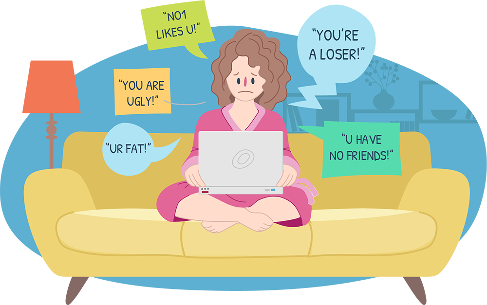
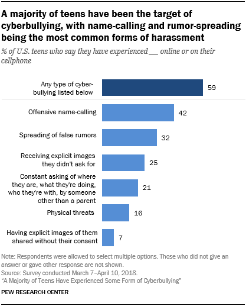
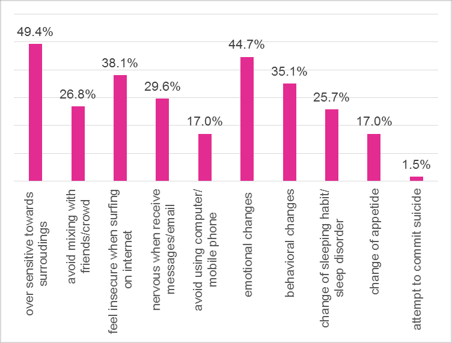

What Cyberbullying Is and Why It’s Important We Refrain:

Cyberbullying is defined as: the use of electronic communication to bully a person, typically by sending messages of an intimidating or threatening nature.
Determining when it’s cyberbullying:
When it comes to determining a persons online actions as cyberbullying, some people may brush the actions off as "Just a joke" or "Just messing around". In this short video attached it helps to clearify and show what cyberbullying truly is.
Informational Video: https://youtu.be/vtfMzmkYp9E
Who are the typical targets?
Research has shown that children and teenagers are more susceptible to this type of bullying than adults.
“In fact, a study by Pew Research Center found that 59% of teenagers who use the internet have experienced some form of cyberbullying, compared to only 33% of adults.”
This comes with danger because the teenage years are often the most vulnerable time in our lives.

Teenagers:
- Already have high stress levels
- Are very gullible
- Are mentally consumed by social media
- Feel the need for popularity
- Have a hard time seeking help
- Often don’t have enough support at home
What cyberbullying can cause:
- Anxiety
- Depression
- Stress
- Anger
- Low self-esteem
These can be detrimental effects on the health and well-being of any cyber bully victim. Victims can have lasting effects from their endured traumas, with no telling of when the effects will vanish.
Informational Video: https://www.youtube.com/watch?v=uOJIVKMjc2o

Conclusion:
It hurts to have others make you feel unwanted or unliked. Bullying makes these feelings arise quickly and they can become very extreme. In today's society, we have to worry about more than just traditional bullying because technology has provided for a much more montrous act. Cyberbullying is scary, but it’s real. It’s important we refrain from cyberbullying others because it can have a greater impact than most might anticipate. All human life is precious and should never be taken for granted.
Bibliography
“Why Do People Cyberbully?” Delete Cyberbullying, https://www.endcyberbullying.net/why-do-people-cyberbully.
Assistant Secretary for Public Affairs (ASPA). “Laws, Policies & Regulations.” StopBullying.gov, 7 Jan. 2022, https://www.stopbullying.gov/resources/laws.
StopBullyingGov. “Is It Cyberbullying?” YouTube, YouTube, 24 Aug. 2021, https://www.youtube.com/watch?v=vtfMzmkYp9E.
“Effects of Cyber Bullying.” YouTube, YouTube, 30 Nov. 2018, https://www.youtube.com/watch?v=uOJIVKMjc2o.
©Jay-lee Sturgeon 2022